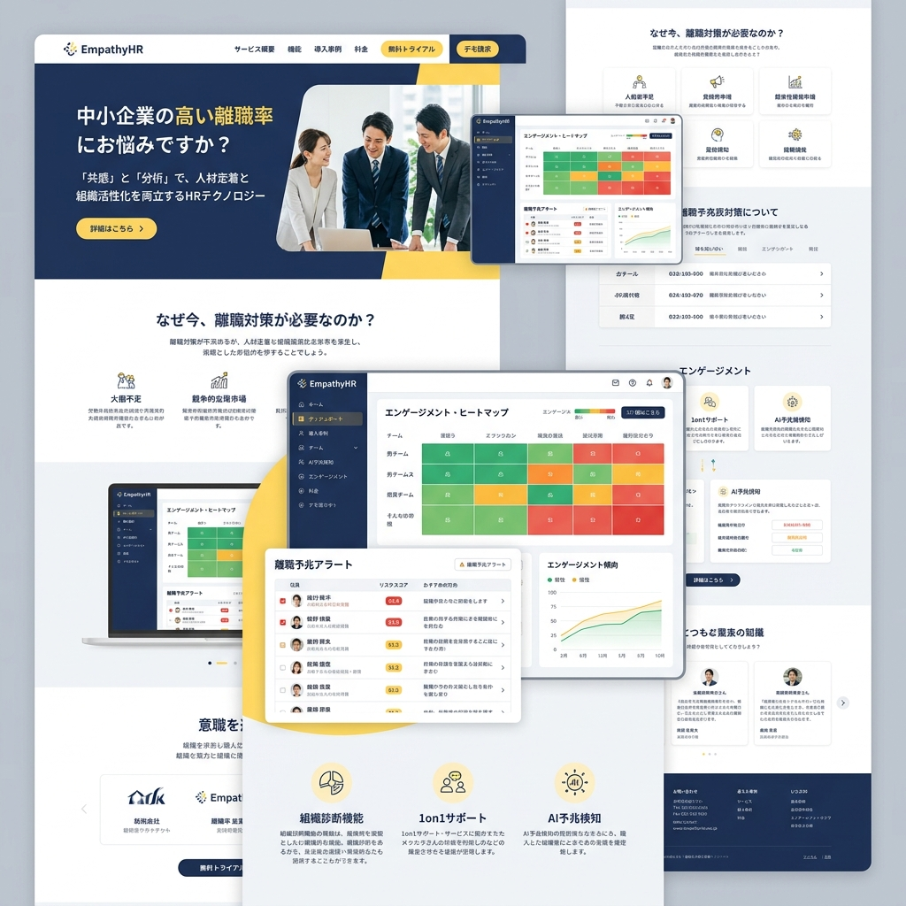

「共感力」という
最強のスキルを可視化する。
論理的思考力だけでは、現代の複雑なチームは率えません。EMPATHY HRは、面接時の微細な表情変化、声のトーン、言葉の選び方をAIが解析し、履歴書には書かれないEQ（心の知能指数）と共感力を客観的にスコアリングする次世代採用ツールです。

「頭の回転が速い」だけの人材が引き起こす悲劇
素晴らしい経歴と論理的なプレゼン能力。面接では完璧に見えた人材が、入社後にチームの士気を下げ、優秀なメンバーの離職を引き起こす「トキシック（有害）な人材」だった。この採用の失敗は、従来のアセスメントテストや面接官の直感では防ぐことができません。
非言語コミュニケーションのディープラーニング
マイクロ・エクスプレッション解析
オンライン面接中の動画から、肉眼では捉えきれない1/10秒単位の微表情（怒り、軽蔑、共感）を読み取り、ストレス耐性や他者への配慮をスコア化します。
声の「波形」に隠された真意
発話の速度、ピッチの揺らぎ、間（ポーズ）の取り方を音声解析AIが分析。自信の裏にある不安や、相手の話を聞き入れる受容性の高さを評価します。
セマンティック（意味論）解析
「I（私）」と「We（私たち）」の出現頻度、失敗を語る際の他責思考の有無など、使用する単語の文脈から深層心理にある価値観をあぶり出します。
バイアスのない、絶対的なフェアマッチング
面接官も人間です。「自分と似た雰囲気」や「学歴」に無意識の好意（ハロー効果）を抱いてしまいます。EMPATHY HRのAIは、性別、人種、年齢といった属性データを完全に無視し、純粋な「対人関係構築力」のみをフラットに評価します。
入社後の「心理的安全性」を予測する
単に個人のEQを測るだけでなく、既存チームのメンバーのEQデータと掛け合わせることで、「この候補者が入社した場合、チームの心理的安全性がどう変化するか」をシミュレーション。最強のシナジーを生むカルチャーフィットを予測します。
Case Study | 急成長中のSaaSスタートアップ
組織の急拡大に伴い、マネージャー層の離職とチームの崩壊が相次いでいた企業。EMPATHY HRを採用プロセスに導入し、スキル以上に「エンパシー（共感）スコア」を重視してリーダーを採用するように変更。結果として、1年後の離職率が40%から5%に劇的に改善し、チーム全体の生産性も向上しました。
「優しい」が、最も「強い」時代へ
正解のない予測不可能な時代において、組織のレジリエンス（回復力）を決めるのは、メンバー同士の深い共感と信頼です。私たちはテクノロジーを用いて、人間の「思いやり」をビジネスの最重要KPIへと押し上げます。